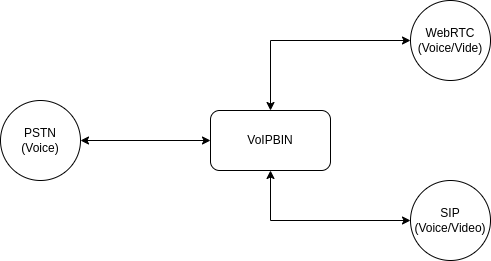
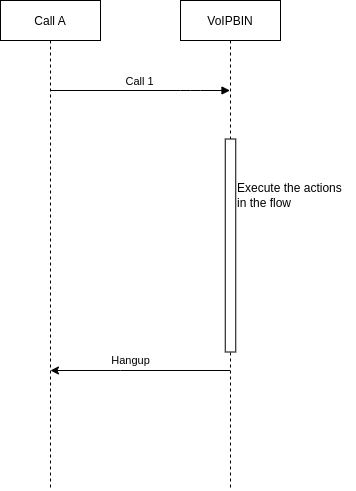
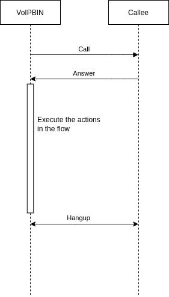

Overview¶
Note
AI Context
Complexity: Medium
Cost: Chargeable (credit deduction per call minute)
Async: Yes.
POST /callsreturns immediately with statusdialing. PollGET /calls/{id}or subscribe via WebSocket to track call status changes.
The VoIPBIN call API provides a straightforward and convenient way to develop high-quality call applications in the Cloud. With the VoIPBIN API, developers can leverage familiar web technologies to build scalable and feature-rich call applications, giving them the power to control inbound and outbound call flows using JSON-based VoIPBIN actions. Additionally, the API offers capabilities to record and store inbound or outbound calls, create conference calls, and send text-to-speech messages in multiple languages with different voices and accents.
With the VoIPBIN API you can:
Build apps that scale with the web technologies you are already using.
Control the flow of inbound and outbound calls in JSON with VoIPBIN’s actions.
Record and store inbound or outbound calls.
Create conference calls.
Send text-to-speech messages in 50 languages with different voices and accents.
Note
AI Implementation Hint
To create an outbound call, use POST https://api.voipbin.net/v1.0/calls with a JSON body containing source (E.164 number from GET /numbers), destinations (array of target addresses), and optionally flow_id (UUID from GET /flows) to execute a flow when the call is answered. The endpoint returns immediately with status dialing. Poll GET https://api.voipbin.net/v1.0/calls/{id} or subscribe via WebSocket for real-time status updates. Each call deducts credits from the customer’s billing account per minute.
Protocol¶
VoIPBIN offers support for various call/video protocols, enabling users to join the same conference room and communicate with one another seamlessly. The flexibility in protocol options ensures efficient and reliable communication between different devices and platforms.

PSTN/Phone Number Format¶
In the VoIPBIN APIs, all PSTN/Phone numbers must adhere to the +E164 format. This format standardizes the representation of phone numbers to facilitate smooth communication and interoperability across different systems.
Key requirements for phone numbers within the VoIPBIN APIs:
The phone number must have the ‘+’ symbol at the beginning.
The number should not contain any special characters, such as spaces, parentheses, or hyphens.
For example, a US phone number should be represented as +16062067563, and a UK phone number should be represented as +442071234567.
Extension Number Format¶
The extension numbers used in the VoIPBIN system can be customized according to specific requirements. However, they must adhere to the following limitation:
Extension numbers should not contain any special characters, such as spaces, parentheses, or hyphens.
The absence of special characters ensures consistent and reliable processing of extension numbers within the VoIPBIN system, promoting smooth communication and interaction.
Call Lifecycle¶
Every call in VoIPBIN follows a predictable lifecycle from creation to termination. Understanding this lifecycle helps you build reliable applications that respond correctly to call state changes.
State Diagram
+--------------+
| dialing |
| (call starts)|
+------+-------+
|
+---------------------+---------------------+
| | |
v v v
+------------+ +------------+ +------------+
| ringing | | canceling | | hangup |
| (dest rang)| | (caller | | (failed) |
+-----+------+ | cancels) | +------------+
| +-----+------+
| |
v |
+-------------+ |
| progressing | |
| (answered) | |
+------+------+ |
| |
+--------+--------+ |
v v |
+------------+ +------------+ |
|terminating | | hangup | |
| (ending | | (remote | |
| locally) | | hangup) | |
+-----+------+ +------------+ |
| |
+--------------+---------------+
v
+------------+
| hangup |
| (final) |
+------------+
State Descriptions
Status |
What is happening |
|---|---|
dialing |
Call has been created. The system is attempting to reach the destination through the phone network. |
ringing |
The destination device is ringing. The person being called can now answer. |
progressing |
The call has been answered. Both parties can now hear each other. Media (audio/video) is flowing. |
terminating |
The system is ending the call. This happens when your application hangs up or a flow action ends the call. |
canceling |
The caller is canceling before the destination answered. Only happens for outgoing calls. |
hangup |
The call has ended. This is the final state - no further changes are possible. |
Key Behaviors
States only move forward, never backward. A call that reached “progressing” cannot go back to “ringing”.
Once a call reaches “hangup”, it cannot change anymore.
The “canceling” state only applies to outgoing calls (when the originator hangs up before answer).
What Happens At Each Stage¶
During Dialing
When you create an outbound call or receive an inbound call, the call enters the dialing state.
Your App VoIPBIN Destination
| | |
| POST /v1/calls | |
+-------------------------->| |
| | SIP INVITE |
| +--------------------------->|
| | |
| Call object | |
| status: "dialing" | |
|<--------------------------+ |
At this point:
VoIPBIN is trying to reach the destination
No audio is flowing yet
The call may fail if the network is unreachable
During Ringing
The destination device is ringing. The person can pick up the phone.
| | |
| | 180 Ringing |
| |<---------------------------+
| Webhook: call_updated | |
| status: "ringing" | Ring Ring |
|<--------------------------+ |
At this point:
The destination phone is ringing
Early media (ringback tone) may be playing
The caller is waiting for an answer
During Progressing (Answered)
The call has been answered. This is when real communication begins.
| | |
| | 200 OK |
| |<---------------------------+
| Webhook: call_updated | |
| status: "progressing" | <=====================> |
|<--------------------------+ (Audio flows) |
At this point:
Both parties can hear each other
Flow actions start executing (if defined)
Recording can begin
Media controls (hold, mute) become available
During Hangup
The call has ended. Check the hangup_by and hangup_reason fields to understand why.
| | |
| | BYE |
| |<---------------------------+
| Webhook: call_updated | |
| status: "hangup" | |
| hangup_by: "remote" | |
| hangup_reason: "normal" | |
|<--------------------------+ |
Understanding Hangup Reasons¶
When a call ends, VoIPBIN tells you why it ended. This helps you build appropriate responses for different scenarios.
Hangup Reason Values
Reason |
What happened |
|---|---|
normal |
The call ended normally after a conversation. Someone hung up. |
failed |
The call never connected. Network issues prevented the call from reaching the destination. |
busy |
The destination is already on another call. |
cancel |
The caller hung up before the destination answered. |
timeout |
The call exceeded maximum allowed duration after being answered. |
noanswer |
The destination phone rang but nobody picked up. |
dialout |
VoIPBIN’s dialing timeout expired before the destination answered. Different from noanswer - this is our timeout. |
amd |
The Answering Machine Detection (AMD) action detected a voicemail and hung up according to your settings. |
Hangup By Values
Value |
What it means |
|---|---|
remote |
The other party hung up first. You were still in the call. |
local |
Your application or flow action ended the call. |
Common Scenarios
Scenario: Normal conversation
----------------------------
hangup_by: "remote"
hangup_reason: "normal"
-> The other person hung up after talking
Scenario: Missed call
----------------------------
hangup_by: "remote"
hangup_reason: "noanswer"
-> Phone rang but nobody answered
Scenario: Your app ended the call
----------------------------
hangup_by: "local"
hangup_reason: "normal"
-> Your flow action or API call ended it
Scenario: Network problem
----------------------------
hangup_by: "remote"
hangup_reason: "failed"
-> Call never connected due to network issues
Media Control Operations¶
Once a call is in the “progressing” state (answered), you can control the audio in several ways. Each operation is independent - you can combine them as needed.
Hold
Pauses the call. The other party hears silence (or music if MOH is enabled).
Before Hold After Hold
+---------+ audio +---------+ +---------+ silence +---------+
| Caller | <============> | VoIPBIN | | Caller | ------------> | VoIPBIN |
+---------+ +---------+ +---------+ (or music) +---------+
Use hold when the caller needs to wait (e.g., while transferring)
The caller stays connected but cannot hear ongoing activity
Unhold resumes normal audio
Mute
Silences audio in one or both directions without putting the call on hold.
Mute "in" Mute "out" Mute "both"
+----+ ---X--> +----+ +----+ <--X--- +----+ +----+ --X-- +----+
| A | <------ | B | | A | -------> | B | | A | --X-- | B |
+----+ +----+ +----+ +----+ +----+ +----+
A cannot hear B A cannot be heard Complete silence
“in”: The call cannot hear incoming audio
“out”: The call’s audio is not sent to others
“both”: Complete silence in both directions
Recording
Captures the call audio for later playback.
+---------+ +---------+ +---------+
| Caller | <=====> | VoIPBIN | <=====> | Dest |
+---------+ +----+----+ +---------+
|
v (recording)
+---------+
| File |
+---------+
recording_id shows the current recording (if active)
recording_ids lists all recordings made during this call’s lifetime
You can start and stop recording multiple times in one call
Call Chaining¶
VoIPBIN’s call concept differs from traditional 1:1 calls. A single logical conversation may involve multiple call objects linked together.
The Two-Call Model
When you make a call from A to B through VoIPBIN, there are actually two separate calls:
Traditional View: A -----------------------> B
VoIPBIN Reality: A <--- Call 1 ---> VoIPBIN <--- Call 2 ---> B
| |
+------------------------+
(bridged audio)
Why Two Calls?
This design enables powerful features:
Recording: VoIPBIN can record both sides independently
Conferencing: Add more parties without changing the original calls
Transfer: Move calls between agents without dropping the caller
Flow Control: Run different actions on each call leg
Master and Chained Calls
When calls are related, they form a chain:
+-------------------------------------------------------+
| Master Call |
| master_call_id: 00000000-0000-0000-0000-000000000000 |
| chained_call_ids: [call-2-id, call-3-id] |
+-------------------------+-----------------------------+
|
+---------------+---------------+
v v v
+----------+ +----------+ +----------+
| Call 2 | | Call 3 | | Call 4 |
| master: | | master: | | master: |
| call-1-id| | call-1-id| | call-1-id|
+----------+ +----------+ +----------+
Chaining Behaviors
When the master call hangs up, all chained calls automatically hang up
Chained calls can only be added while the master is in dialing, ringing, or progressing state
Each chained call tracks its master via the master_call_id field
Common Use Case: Transfer
Step 1: Caller and Agent talking
+--------+ +---------+ +--------+
| Caller |<----->| VoIPBIN |<----->| Agent |
+--------+ +----+----+ +--------+
|
Master Call
Step 2: Agent initiates transfer to Supervisor
+--------+ +---------+ +--------+
| Caller |<----->| VoIPBIN | | Agent | (on hold)
+--------+ +----+----+ +--------+
|
+-----------> +------------+
| | Supervisor | (ringing)
Chained Call +------------+
Step 3: Supervisor answers, Agent drops
+--------+ +---------+ +------------+
| Caller |<----->| VoIPBIN |<----->| Supervisor |
+--------+ +---------+ +------------+
Multi-Party Chaining (3+ Parties)
Call chaining supports more than two parties. Each chained call connects to the master:
+--------+ +---------+ +---------+
| Caller |<----->| VoIPBIN |<----->| Agent 1 |
+--------+ +----+----+ +---------+
|
+------------>+---------+
| | Agent 2 |
| +---------+
|
+------------>+------------+
| Supervisor |
+------------+
Master: Caller's call
Chained: Agent 1, Agent 2, Supervisor (all linked to master)
Chaining vs Conference Decision Guide
Need multiple parties?
|
+------------+------------+
| |
Sequential? Simultaneous?
(one at a time) (all at once)
| |
+-----+-----+ +-----+-----+
| | | |
Yes No Yes No
| | | |
v | v |
[Chaining] | [Conference] |
| |
Need transfers? |
| |
+-----+-----+ |
| | |
Yes No |
| +-------------------+
v |
[Chaining] v
[Conference]
Aspect |
Call Chaining |
Conference |
|---|---|---|
Parties |
Sequential (transfer model) |
Simultaneous (meeting model) |
Audio |
Bridged between pairs |
Mixed for all participants |
Master Control |
Master hangup ends all |
Host controls conference |
Best For |
Transfers, escalation, queues |
Meetings, group calls |
Timestamps Explained¶
Each call tracks important moments in its lifecycle:
Timeline of a successful call:
| tm_create tm_ringing tm_progressing tm_hangup
| | | | |
v v v v v
------o----------------------------o--------------------o--------------------------o------>
| | | |
|<--- dialing -------------->|<--- ringing ------>|<---- progressing ------->|
| | | |
Call created Phone started Call answered Call ended
ringing
Timestamp |
When it’s set |
|---|---|
tm_create |
When the call object was created in VoIPBIN |
tm_ringing |
When the destination phone started ringing |
tm_progressing |
When the call was answered |
tm_hangup |
When the call ended |
tm_update |
Last time any call property changed |
Calculating Durations
Ring duration = tm_progressing - tm_ringing
Talk duration = tm_hangup - tm_progressing
Total duration = tm_hangup - tm_create
Route Failover¶
When an outgoing call fails during dialing or ringing, VoIPBIN can automatically try alternate routes.
+-----------------------------------------------------------------+
| Call Attempt Flow |
+-----------------------------------------------------------------+
Create Call
|
v
+--------------+
| Route 1 |
| (Primary) |
+------+-------+
|
+-------+-------+
v v
Connected? Failed?
| |
v v
Success +--------------+
| Route 2 |
| (Backup) |
+------+-------+
|
+-------+-------+
v v
Connected? Failed?
| |
v v
Success +--------------+
| Route 3 |
| (Last try) |
+------+-------+
|
v
Final Result
Failover Rules
Not all failures trigger failover. VoIPBIN only tries the next route when recovery is possible:
Hangup Reason |
Failover |
Why |
|---|---|---|
failed |
Yes |
Network issue - another route might work |
busy |
No |
The person is busy - trying again won’t help |
noanswer |
No |
They didn’t answer - their choice |
cancel |
No |
Caller cancelled - no need to retry |
normal |
No |
Call succeeded - nothing to retry |
No Failover Cases
Failover is disabled in these situations:
Incoming calls (the route is fixed by the caller)
Conference calls
Calls where flow execution already started (early_execution flag)
Incoming call¶
The VoIPBIN system provides the functionality to receive incoming calls from external parties. This feature allows users to accept and handle incoming calls through their VoIP services. Incoming calls are crucial for various communication applications and call center setups as they enable users to receive inquiries, provide support, and engage with customers, clients, or other users. When an incoming call is received, the VoIPBIN system processes the call request and prepares for call handling based on the specified parameters and configurations.
Execution of Call Flow for incoming call¶
The execution of the call flow for incoming calls involves a simple yet effective sequence of actions:
External Caller VoIPBIN Your Flow
| | |
| INVITE (call request) | |
+-------------------------->| |
| | Lookup destination |
| | Find matching flow |
| | |
| 100 Trying | |
|<--------------------------+ |
| | Execute flow actions |
| +-------------------------->|
| 180 Ringing / 200 OK | |
|<--------------------------+<--------------------------+
| | |
Call Verification: When an incoming call is received, the VoIPBIN system verifies the call’s authenticity and checks for any potential security risks, such as spoofed or fraudulent calls. This verification process ensures that legitimate calls are allowed to proceed.
Determine Call Flow: After successful verification, the system determines the appropriate call flow based on the destination of the incoming call. The call flow includes a set of predefined actions and configurations tailored to handle calls directed to a specific user, department, or interactive voice response (IVR) system.
Execute Call Flow: Once the call flow is determined, the system proceeds to execute it without delay. The call flow actions are triggered in accordance with the predefined configuration for the call destination.
End the Call: After executing the call flow actions, the system initiates the process of ending the call. The call is terminated, and the connection with the external party is disconnected.
By following this streamlined call flow process, the VoIPBIN system efficiently handles incoming calls, ensures their secure and verified handling, and executes the appropriate flow actions based on the call destination. After executing the call flow, the system promptly ends the call, completing the call handling process for the incoming call. Customizable flow actions allow users to tailor the call handling process according to their application’s needs, optimizing user experience and call management efficiency.

Outgoing call¶
The VoIPBIN system offers the outgoing call feature, enabling users to initiate calls to external parties through their VoIP services. This feature is commonly used in various communication applications and call center setups to establish connections with customers, clients, or other users outside the organization. To utilize the outgoing call feature, users need to provide the necessary call parameters, such as the destination phone number, caller ID information, and any additional call settings. These parameters are submitted to the VoIPBIN system, which then processes the request and attempts to establish a connection with the specified destination.
Outgoing Call Permission Requirements¶
Before placing an outgoing call, VoIPBIN validates the customer’s account eligibility. Both checks must pass before the call proceeds to balance validation, source number resolution, and routing.
1. Customer Account Status
The customer account must have status: "active". Accounts in any other state (initial, frozen, expired, deleted) are rejected.
Check your account status via
GET https://api.voipbin.net/v1.0/customerand inspect thestatusfield.If your account is not active, contact support or complete the onboarding process.
2. Identity Verification (PSTN Destinations Only)
For outgoing calls to PSTN phone numbers (type: "tel"), the customer must have identity_verification_status: "verified". This requirement does not apply to SIP destinations (type: "sip").
Check your verification status via
GET https://api.voipbin.net/v1.0/customerand inspect theidentity_verification_statusfield.Possible values:
none(not started),pending(in progress),verified(approved),rejected(failed).Contact support to initiate or complete identity verification.
Outgoing Call Permission Check
──────────────────────────────
Is the customer account active?
│
├── NO → Reject: "customer account is not active"
│
└── YES → Is the destination PSTN (type: "tel")?
│
├── NO (SIP) → Permission granted ✓
│
└── YES → Is identity_verification_status "verified"?
│
├── YES → Permission granted ✓
│
└── NO → Reject: "customer identity verification required for PSTN calls"
Note
AI Implementation Hint
Before creating an outgoing PSTN call via POST https://api.voipbin.net/v1.0/calls, verify the customer’s eligibility by calling GET https://api.voipbin.net/v1.0/customer. Check that status is "active" and identity_verification_status is "verified". If either check fails, do not attempt the call — display the appropriate error to the user. SIP calls (type: "sip") only require an active account status.
Source Number Validation (Outgoing PSTN Calls)¶
For outgoing calls to PSTN phone numbers (type: "tel"), VoIPBIN validates the source number before placing the call. The system uses a cascading fallback to determine the caller ID shown to the destination:
Source Number Resolution Flow
─────────────────────────────
Is the source in E.164 format (+<digits>)?
│
├── YES → Is the source an active, normal (non-virtual) number
│ owned by the customer?
│ │
│ ├── YES → Use the source number as caller ID ✓
│ │
│ └── NO → Fall through to default ↓
│
└── NO → Fall through to default ↓
Does the customer have a default outgoing source number configured?
│
├── YES → Use the default outgoing source number as caller ID ✓
│
└── NO → Set caller ID to "Anonymous" ✓
Key rules:
The source number must be in E.164 format (starting with
+, e.g.,+15551234567).The source number must be a normal number (not virtual) with active status, owned by the customer. Obtain your numbers via
GET https://api.voipbin.net/v1.0/numbers.Virtual numbers cannot be used as the source for outgoing PSTN calls.
If the source number fails validation, the system falls back to the customer’s default outgoing source number (configured on the customer profile via
PUT https://api.voipbin.net/v1.0/customer).If no default outgoing source number is configured, the caller ID is set to Anonymous.
Non-PSTN destinations (SIP endpoints, extensions) skip source number validation entirely.
Note
AI Implementation Hint
When creating an outgoing PSTN call via POST https://api.voipbin.net/v1.0/calls, always use a number from GET https://api.voipbin.net/v1.0/numbers that has type: "normal" and status: "active" as the source.target. Virtual numbers (type: "virtual") will be rejected as a source. If the source fails validation and no default outgoing source number is configured, the call proceeds with anonymous caller ID – the destination may reject anonymous calls depending on their carrier settings.
Anonymous Caller ID (Outgoing PSTN Calls)¶
You can control whether the caller ID is shown or hidden on outgoing PSTN calls. The anonymous parameter is available in several places depending on how the outbound call is created.
Where anonymous caller ID can be set:
Outbound call path |
Where to set |
Default |
|---|---|---|
API-initiated call |
|
|
Flow |
|
|
Flow |
|
|
Registered endpoint outbound call (SIP phone dialing out via VoIPBIN) |
Automatic — inherited from the incoming SIP |
|
Allowed values:
Value |
Behavior |
|---|---|
|
Always hide caller ID. The destination sees “Anonymous” or “Private number” depending on their carrier. The real source number is sent via P-Asserted-Identity (RFC 3325) so the PSTN carrier can route and bill the call, but it is not shown to the called party. |
|
Never hide caller ID. The destination always sees the real source number. |
|
(Default) Inherit the Privacy setting from the incoming call that triggered this outbound call. If there is no incoming call (e.g., an API-initiated outbound call), this behaves the same as |
How it works (SIP level):
When anonymous is "yes" and the destination is a PSTN number (type: "tel"):
The SIP
Fromheader usesAnonymous <sip:anonymous@anonymous.invalid>A
Privacy: idheader is added (RFC 3323)A
P-Asserted-Identityheader carries the real source number for carrier routing (RFC 3325)
When the destination is not a PSTN number (type: "sip", type: "extension"), the anonymous parameter has no effect — the caller ID is always shown.
Registered endpoint behavior:
When a SIP phone registered with VoIPBIN dials an external PSTN number, the system always uses "auto" for the anonymous setting. This means:
If the SIP phone sends a
Privacy: idheader in the INVITE, the outbound PSTN call will be anonymous.If the SIP phone does not send a Privacy header, the outbound call uses the real caller ID.
The user cannot override this from the SIP phone — it is controlled entirely by the phone’s privacy setting.
Most SIP phones have a “Hide Caller ID” or “Anonymous Call” setting that adds the Privacy: id header. Consult your SIP phone’s documentation.
Note
AI Implementation Hint
The anonymous parameter only affects outgoing calls to PSTN numbers (type: "tel"). It has no effect on SIP or extension destinations. When set to "yes", the destination’s phone displays “Anonymous” or “Private number” instead of the caller’s real number. Some carriers or destinations may reject anonymous calls — if the call fails with hangup_reason "failed" or "noanswer", try again with "no" or omit the parameter. For registered endpoint (SIP phone) outbound calls, the anonymous behavior is automatic — set it from the phone’s privacy settings.
For step-by-step examples of each path, see the Call tutorial anonymous sections.
Execution of Call Flow for outgoing call¶
Once the outgoing call request is initiated, the VoIPBIN system starts the process of connecting to the destination phone number. During this phase, the system waits for the called party to answer the call. The call flow refers to the sequence of actions and events that occur from the moment the call is initiated until it is successfully answered or terminated.
Your Application VoIPBIN Destination
| | |
| POST /v1/calls | |
| (with flow actions) | |
+-------------------------->| |
| | INVITE |
| +-------------------------->|
| Call created | |
| status: "dialing" | 180 Ringing |
|<--------------------------+<--------------------------+
| | |
| Webhook: "ringing" | 200 OK (answered) |
|<--------------------------+<--------------------------+
| | |
| Webhook: "progressing" | <=====================> |
|<--------------------------+ Execute flow actions |
| | |
The call flow execution occurs as follows:
Initiation: The user triggers the outgoing call request, providing the necessary call parameters.
Call Setup: The VoIPBIN system processes the request and establishes a connection with the destination phone number.
Wait for Call Answer: After the call setup, the system waits for the called party to answer the call. This waiting period involves ringing the called party’s phone and monitoring the call status.
Call Answered: Once the called party answers the outgoing call, the system proceeds to execute the predefined call flow actions.
Flow Actions Execution: The call flow actions are a set of customizable operations that are executed upon call answer. These actions can include call recording, call routing, call analytics, notifications, and post-call actions, among others.
The call flow execution is critical for ensuring a smooth and efficient communication experience. By customizing the flow actions, users can tailor the call handling process to meet the specific requirements of their application or service, enhancing user engagement and overall call management.

Error handling and Termination¶
During the incoming/outgoing call process, various errors may occur, such as call failures or network issues. The VoIPBIN system have robust error handling mechanisms to gracefully manage such situations. In case of a failed call attempt or call rejection, the system log relevant information for further analysis or reporting purposes.
Common Error Scenarios
Scenario |
What happens |
|---|---|
Network unreachable |
Call fails immediately with hangup_reason: “failed” |
Destination busy |
Call ends with hangup_reason: “busy” - no retry |
No answer timeout |
Call ends with hangup_reason: “noanswer” after ring timeout |
Dial timeout |
Call ends with hangup_reason: “dialout” - our timeout expired |
Call rejected |
Call ends with hangup_reason: “noanswer” - destination refused |
Call concept¶
The concept of a call in VoIPBIN departs from the traditional 1:1 call model. Here’s an overview:
In VoIPBIN, a call includes source, destination, and additional metadata. Moreover, the call can be associated with multiple other calls, creating a dynamic journey that goes beyond the standard 1:1 connection. Envision a call’s trajectory as it connects to an agent and then diverges to another destination.
In VoIPBIN, the conventional call scenario A -> B is delineated by two distinct calls:
A VoIPBIN B
|<-- Call 1 --->| |
| |<--- Call 2 -->|
|<-----RTP----->|<-----RTP----->|
Comparison: Traditional Call Concept vs VoIPBIN Call Concept¶
Traditional Call Concept
Follows a 1:1 model where a call is a direct connection between a source and a destination.
Typically involves a straightforward flow from the caller to the recipient.
Limited in handling complex call journeys or interactions with multiple parties.
VoIPBIN Call Concept
Deviates from the traditional 1:1 model, allowing for more intricate call structures.
Encompasses source, destination, and additional metadata in a call.
Permits connections to multiple other calls, creating dynamic call journeys.
Visualizes a call’s path, which may involve connecting to an agent and branching to additional destinations.
In summary, while the traditional call concept adheres to a simple point-to-point model, the VoIPBIN call concept introduces a more flexible and multifaceted approach, accommodating diverse call scenarios and interactions.
Troubleshooting¶
Call Creation Issues
Symptom |
Solution |
|---|---|
Call stuck in “dialing” |
Check destination number is valid E.164 format; verify route exists for destination |
Call immediately hangs up |
Check |
No flow executing after call answers |
Verify |
Media Control Issues
Symptom |
Solution |
|---|---|
Hold/mute not working |
Verify call status is |
Recording not starting |
Check call is in |
Call Chaining Issues
Symptom |
Solution |
|---|---|
Chained calls not created |
Verify master call is in |
All calls ended unexpectedly |
Master call hangup cascades to all chained calls; check master call |